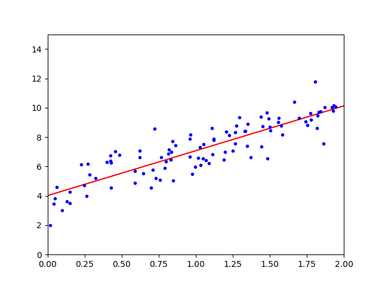

线性回归#
1. 线性回归#
1.1. 简单线性回归#
广义上的线性回归，包括线性回归和多项式回归，其目的是找到一条直线或曲线，并以最小的误差来拟合数据，回归的核心就是寻找误差的最小值。
回归分析的前提是，\(𝑿_i\)相互独立，\(𝒀\)服从高斯分布
对于简单线性回归，其总体回归线可表示为
其中，\(ϵ\)为均值为\(0\)的随机误差，其简化形式为
这里，\(θ_0\)和\(θ_1\)为未知常量，被称为模型的系数（coefficient）或参数（parameter）。通过训练数据，对其进行估计，即可得到想要的预测值：
1.2. 多元线性回归#
设有\(p\)个不同的预测器，则多元线性回归模型为：
经过系数估计，可得
1.3. 模型语言#
对线性模型回归模型
其中，
\(𝑿\)被称为模型的设计矩阵（design matrix）。
\(𝒀_i\)被称为回归量（regressand），内生变量，响应变量，测量变量。
\(𝑿_i\)被称为回归子（regressor），外生变量，解释变量，协变量（covariates）。通常情况下，回归子中会包含一个常数，\(θ\)中的对应值为截距。线性模型的许多统计推断过程需要存在截距，即使理论上其值应为零。
\(θ\)为参数向量，也称效应量（effects），只要参数向量是线性的，模型就保持线性。
\(ϵ_i\)为残差、误差项或噪音（noise），误差项和回归量之间的关系，例如它们是否相关，是制定线性回归模型的关键步骤。
Operator |
Meaning |
|---|---|
|
因变量-自变量连接符，弱相关 |
|
因变量-自变量连接符，强相关 |
|
取并集 |
|
取差集 |
|
所有关系，\(a*b ≡ a + b + a:b\) |
|
非交互关系，\(a/b ≡ a + b\) |
|
交互关系连接符 |
1.4. 运算复杂度#
规范方程需要计算的\(𝑿^{⊤}𝑿\)的逆是一个\((n + 1) × (n + 1)\)的矩阵，其运算复杂度为\(O(n^{2.4})\)∼\(O(n^3)\)，即，若特征\(n\)加倍，则运算时间将乘以\(2^{2.4}∼2^3\)倍。
相比较之下，SVD 的运算复杂度只有\(O(n^2)\)。从积极的一面来看，两者均与训练集中的实例数（它们为\(O(m)\)）呈线性关系，故，只要它们适合内存，它们就可有效地处理大型训练集。
2. 模型检验#
2.1. 估计系数#
在做出预测之前，需要根据数据集估计系数。令
表示\(n\)组实例，每组中都包含\(𝑿\)和\(𝒀\)的一个观测值。此处使用最常用的残差平方和（residual sum of squares，RSS）来度量误差（error），用\(e_i = y_i - ŷ_i\)表示第\(i\)个残差（residual），则
使用普通最小二乘法（Ordinary Least Squares，OLS）选择\(θ_0\)和\(θ_1\)来使\(\mathrm{\mathrm{RSS}}\)最小，求出
这里，\(ȳ ≡ \frac{1}{n} ∑y_i\) 和 \(x̄ ≡ \frac{1}{n} ∑_{i=1}^{n x_i}\) 为样本均值，这种估计即称为最小二乘估计（least squares estimates，LSE），可表示为：
求导得
\(\frac{∂𝑿^{⊤}𝑨}{∂𝑿} = 𝑨\), \(\frac{∂𝑨𝑿}{∂𝑿} = 𝑨^{⊤}\), \(\frac{∂𝑿^{⊤}𝑨𝑿}{∂𝑿} = (𝑨 + 𝑨^{⊤})𝑿\)
即\(\hat{θ}\)是\(𝒀\)的线性组合，这个等式被称为规范方程（Normal Equation）。

为了避免\(𝑿\)不可逆的情况，实践中多使用奇异值分解（Singular Value Decomposition，SVD）来代替求解规范方程：
其中，\(𝑿⁺\)是\(𝑿\)的伪逆（pseudo-inverse），也叫 Moore-Penrose 逆，其由下式给出：
对于矩阵\(𝜮⁺\)，SVD 取\(𝜮\)，并将所有<微小阈值的值设置为 0，然后将所有非零值替换为其反值，最后对所得矩阵进行转置。